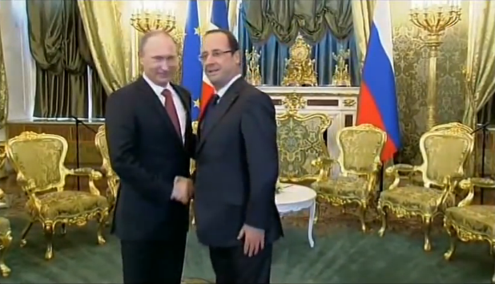

Как Кремль применяет мягкую силу во Франции
Под шквальной критикой своих действий против Украины, Москва предпринимает попытки для реабилитации собственного имиджа и пытается добиться чтоб ее услышали в Европе; для этого используются финансируемые Россией аналитические центры и сми, все старающиеся выиграть расположение европейцев.
В своей статье «Радио „Свободная Европа'/Радио „Свобода'» «Свободная Европа»/Радио «Свобода», Наталья Каневская называет главной целью Кремля Францию.
Эта страна является домом для целого ряда организаций, которые рекламируют все русское, включая правительство.
Говорят, что многие из них финансируются Россией.
«Есть отдельная Россия, которой она хочет казаться за рубежом», ‒ говорит Сесиль Весье, специалист по России и профессор французского университета Ренн. «И всегда находятся люди, которые готовы финансировать подобного рода политический обмен информацией».
По мнению Весье, парижский Институт демократии и сотрудничества, российский аналитический центр, основанный в 2008 году, непрекрыто следует кремлевской линии, хоть формально и не связан с правительством Владимира Путина.
На веб-сайте института указана основная цель «отношения Восток-Запад, место России в Европе», а также, что он получает средства от «частных источников финансирования».
Институт возглавляет Наталья Нарочницкая, бывший депутат Государственной Думы, когда-то работавшая советским дипломатом в секретариате ООН в Нью Йорке.Во время своей работы в Думе, она также была зампредседателя комитета Госдумы по международным делам.
«Предыдущий пост Нарочницкой прекрасно дает понять, какие у нее взгляды», ‒ говорит Весье.«Ни одному журналисту не удалось узнать, кто финансирует институт».
Директор исследовательских программ Института Джон Локленд, британский евроскептик, чья позиция во многих вопросах, включая украинскую политику, совпадает с позицией Кремля.
В декабрьском интеврью для финансируемого российским государством телеканала он осудил роль партии «Свобода» в проевропейских протестах в Киеве, а также обвинил западные сми в «пропаганде», вторя заявлениям Москвы о том, что демонстранты и новое правительство, появившееся в результате протестов в Киеве, являются страшными антисемитами.https://www.youtube.com/watch?v=CxXpG5OeGt
В 2004, когда набирала ход Оранжевая революция, Локленд также называл протестующих «наркоманами-скинхедами из Львова», а также обвинял прозападного кандидата в президенты Виктора Ющенка и его окружение в поддержке неонацистов.
Анонимные спонсоры
На вопрос о том, кто финансирует институт, Локленд ответил, что финансы институту предоставляет московский Фонд исторической перспективы, который в свою очередь финансируется анонимными спонсорами и возглавляется Нарочницкой.
По словам Локленда, «гости и России» регулярно приглашаются для участия в круглых столах и симпозиумах, которые организовывает институт.Однако, он отрицает, что организация пытается продвигать московскую позицию в текущих событиях.
«Мы российский институт, но мы редко обсуждаем Россию как таковую», ‒ говорит Локленд.«Представление имиджа России является непрямым результатом нашей деятельности».
По словам Локленда, институт ставит перед собой простую цель: «предоставлять наше виденье, альтернативный взгляд на важные текущие события».Для таких наблюдателей как Весье, наличие подобных организаций в Париже является особенно тревожным знаком, учитывая серьезные ограничения для организацаий с зарубежным финансированием посредством печально известного «закона об иностранных агентах».
Российские сми также активно пытаются привить позицию Кремля французам.
Несколько российских сми, которые финансируются государством, включая «РИА Новости» имеют вебсайты, веб-страницы или бумажные версии на французском, через которые они доносят линию Кремля.
Также есть «La Russie d’Aujourdhui» (Россия Сегодня), ежемесячное приложение, которое печатается в консервативной газете «Le Figaro» (которая выпускается и спонсируется кремлевской «Российской газетой»), само ее название очень похоже на название российского государственного англоязычного телеканала «RT» (ранее «Russia Today»), и чей журналист Дмитрий Кошко сохраняет лояльность Кремлю.
Возможно, самым ярым защитником российской политики был недвусмысленно названный онлайн канал «Prorussia TV», который был создан год назад и был закрыт в апреле из-за переорганизации «Голоса России», государственной станции, которой канал принадлежал.
«Его дискурс для российских и французских тем был абсолютно политичным и ультраправым», ‒ говорит Весье.«Далее французские темы подхватывались и развивались Институтом демократии и сотрудничества.Таким образом, между этими двумя структурами было тесное идеологическое сотрудничество».
Позиционируя себя каналом для французской аудитории, «Prorussia TV» постоянно подвергался обвинениям в обмане зрителей.«Их журналисты делали репортажи на фоне Красной площади и Кремля», ‒ говорит Весье.«А на самом деле все снималось на задворках Парижа.Репортеры и дурналисты попросту позировали перед картинками на заднем фоне».
По словам Весье, работники канала имеют тесную связь с французской ультраправой партией «Национальный фронт».Лидеры «Национального фронта» часто появляются в их выпусках новостей, где яростно критикуют политику правительства Франции.
«Это чистой воды манипуляции, оплаченные деньгами российских налогоплательщиков», ‒ говорит Весье.
Газ и водка
Об Институте демократии и сотрудничества также говорят, что они координируют свои действия с Национальным фронтом, хоть и отрицают эти обвинения.
Однако, Локленд признает, что многие сторонники правых являются поклонниками Кремля, включая лидера «Национального фронта» Мари Ле Пен, которая ранее в этом году посетила Москву, где общалась со спикером Государственной думы Сергеем Нарышкиным и заместителем председателя правительства Дмитрием Рогозиным.
«Отношения с Национальным фронтом очень дружественные», ‒ говорит Локленд.
Аналитики утверждают, что режим Путина и французские ультраправые имеют общую идеологическую модель, которая включает агрессивную антиамериканскую позицию и евроскептицизм.
В то время, когда Россия подверглась массовой критике запада в преддверии аншлюса Крыма, ультраправые партии Европы стали на защиту Кремля и выслали наблюдателей на мартовский псевдореферендум, за которым последовал захват украинского полуострова.
Но этими действиями им не удалось выиграть расположение европейцев.
Аналитики отмечают, что обычно мягкая сила применяется вместе с экономической экспансией, и является неэффективной в случаях иерархически организованных правительством кампаний, к которым, судя по всему, прибегает Россия.«Американская мягкая сила применяется посредством компаний: Кока-Колой, МакДональдсом на каждом углу, американской одеждой, словом, посредством того, что не контролируется американским правительством» ‒ говорит Весье.«Российская мягкая сила включает средства информации и пропаганду а не то, что действительно делает страну сильной: фильмы, товары.Из России мы получаме только газ и водку».
Posted On: 2014-06-28T21:00:00

Content Date: 2014-06-28
Download Date: 2021-07-16
Document ID: L0C04FDJQ